UTC, TAI
Specifies a mathematical method for locating points within a particular reference frame
Spatial reference system
co-rotating with the Earth (in diurnal motion in space)
positions attached to solid surface of Earth:
Conventional (C)TRS: Defined by
Set of physical points with precisely determined coordinates in a specific coordinate system attached to a TRS
Defined by astronomical and geodetic communities (IAU, IUGG, IERS, ...)
(C)TRF: set of physical points with precisely determined coordinates in a specific coordinate system
as realisation of ideal TRS
2 Types: dynamical CTRF and kinematical CTRF
VLBI - Very Long Baseline Interferometry
since 80s
IVS network: 34sites
usage of astronomical radio source (Quasar)
Results:
SLR - Satellite Laser Ranging
since 74
ILRS network: 39 sites
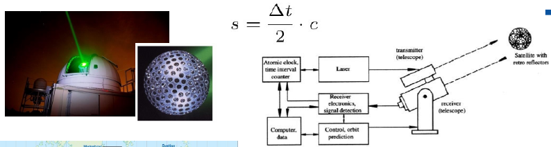
RTT from laser
Results:
Defines Origin (geoocentre) and with VLBI the scale
DORIS - Doppler Orbitography and Radiopositioning Integrated by Satellite
since 60 - French
IDS network: 60 sites
Doppler shift of signal sent from Ground-based beacons
Results:
Benefit:
GNSS
GNSS: subject to complex nongravitational dynamics
-> limits dynamic interpretation of station motions in the CM-frame in terms of gloabl mass redistribution.
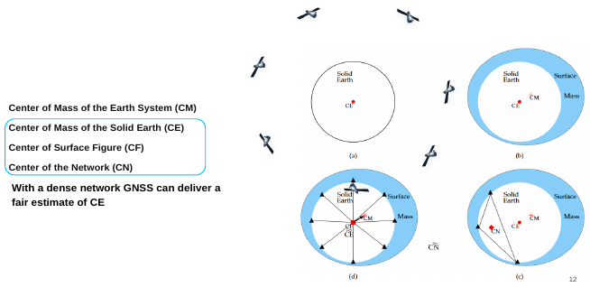
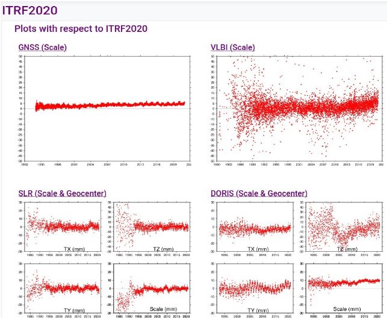
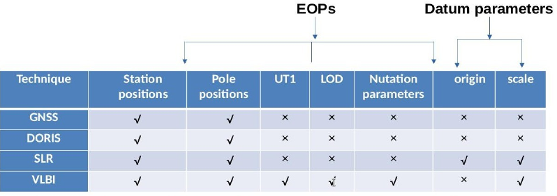
-> Combination of all space geodetic techniques for definition of all geodetic parameters (accurate TRF)
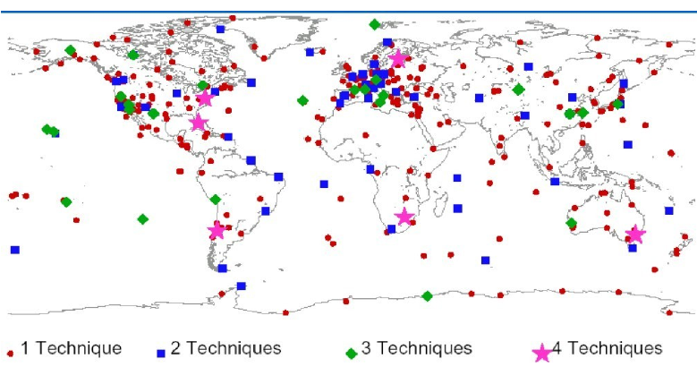
For connection of TRFs: some ties between frames
Local Ties in co-location sites
Spacial Ties - Multi-technique spacecraft
TRF with accuracy of 1mm & long-term stability of 0.1 mm/y
VLBI transmitter
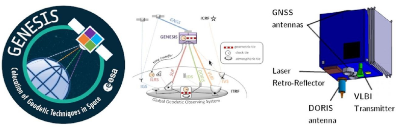
Combination of individual TRF solutions
Individual TRF solution:
Position and velocity
Full variance matrices
In SINEX format (Solution INdependent Exchange)
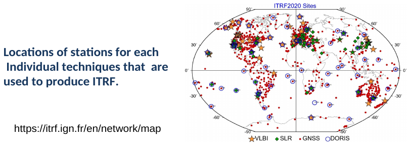
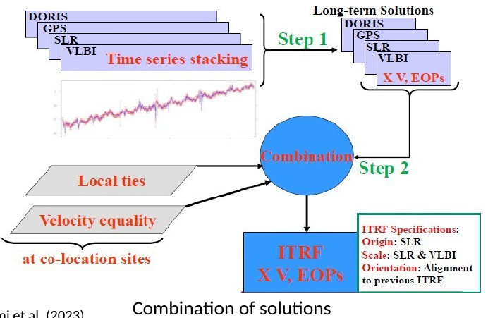
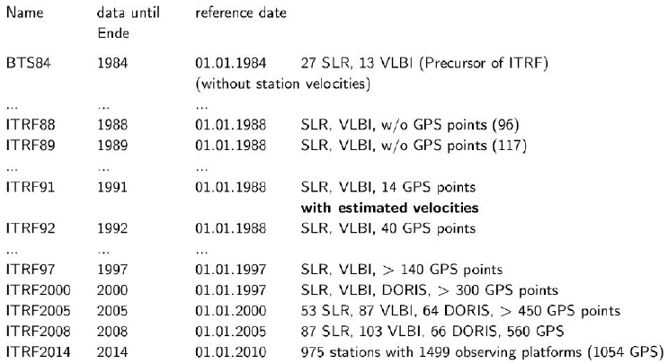
Due to
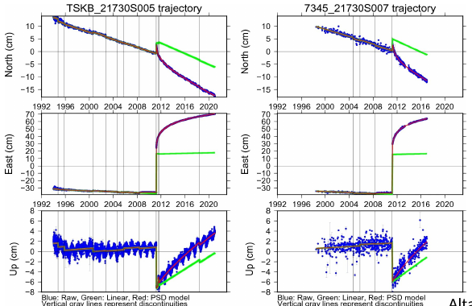
Update related to measurement techniques
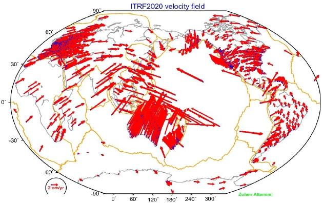
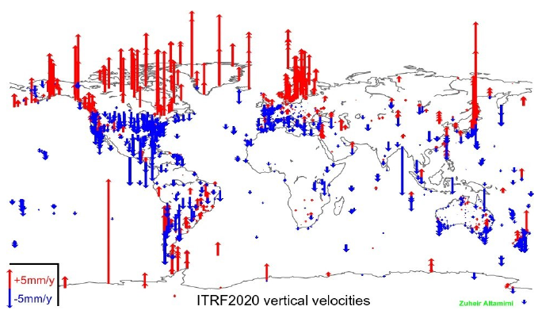
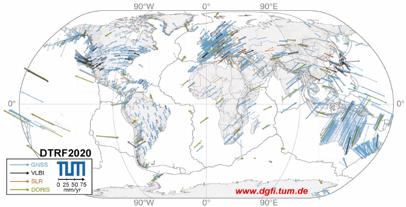
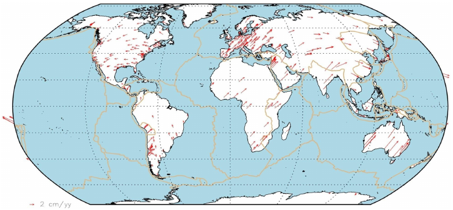
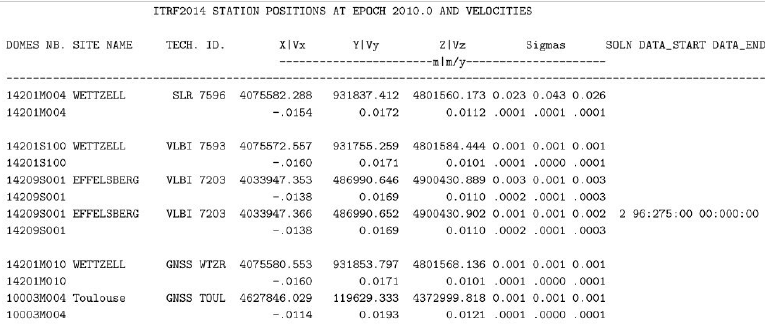
X_t = X_{t_0} + v_x\cdot(t-t_0)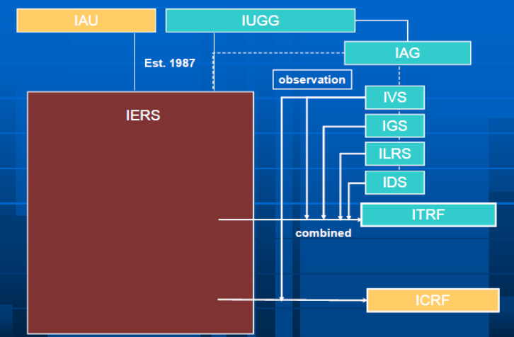
IERS - International Earth Rotation and Reference System
TRF solutions computed by IERS analysis centers using space geodesy observations
Ellipsoidal:
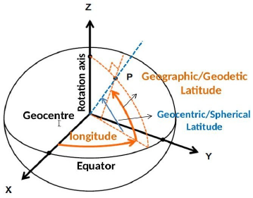
Datum used by GPS system
Defined by coordinates of tracking and control stations
Regularly aligned with ITRF
Latest realisation WGS84 is G2139 aligned to ITRF14
Similar to ITRF:
But
Spherical and Cartesian:
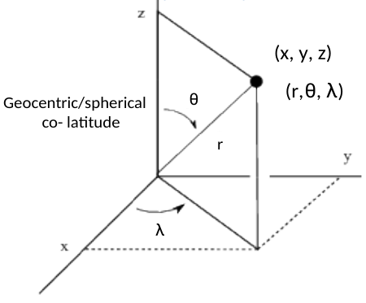
Topocentric
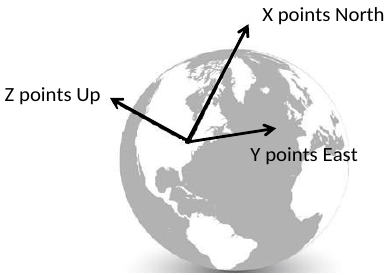
No standard definition
Z-Axis is normal to reference surface
XY-plane: observers's local horizon
Left-handed coordinate system
Coordinates: Altitude (elevation angle), Azimuth
Examples:
CRS: theoretical concept for spatial reference system of coordinates axes w.r.t positions of celestial bodies
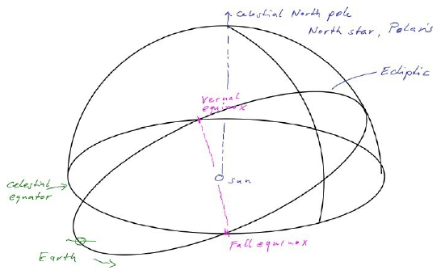
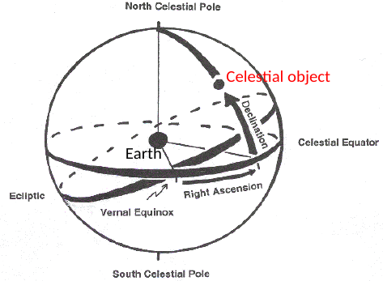
Set of physical objects with precisely determined coordinates in specific coordinate system attached to CRS
2 types: Dynamical and Kinematical CRF
Usage of Quasars, not stars
Coordinate axes fixed w.r.t Universe (no global rotation)
contains 2 optical telescopes:
Slow spinning: spinning telescopes across entire celestial sphere
Can also be used to realise CRF:
VLBI observations tie antenna positions in ITRF to distance celestial sources in ICRF
Linking TRFx to CRFs through EOPs (nutation and Earth rotation parameters and Earth's angular velocity (UT1-UTC)).